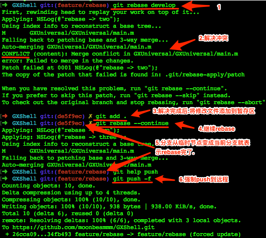
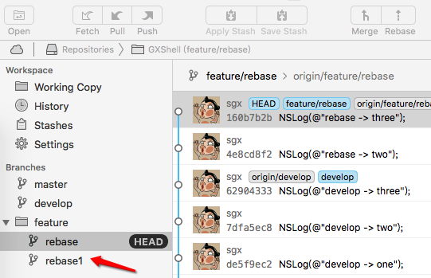
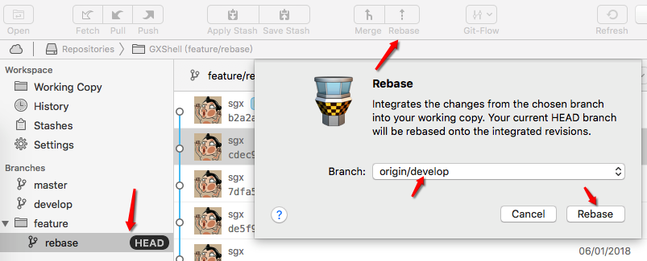
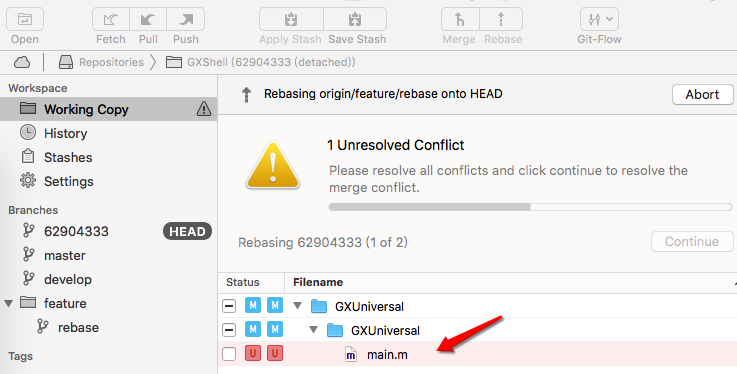
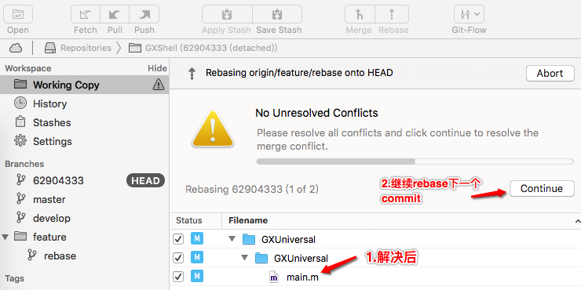
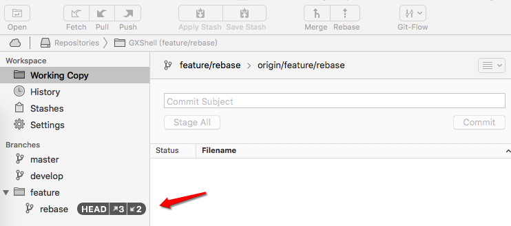
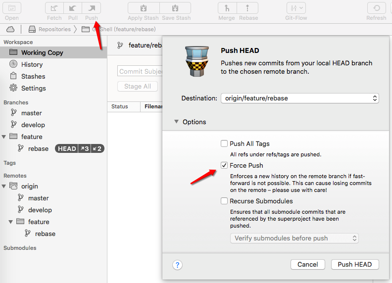
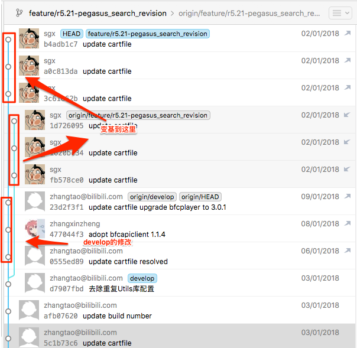

一.命令行操作git rebase

二.图形工具Tower操作
sourceTree做rebase不友好.所以只介绍Tower工具.
一.做备份(可以省略)
为了防止rebase丢失节点.可以在rebase操作前在当前分支开一个新分支做备份用.
如果你很自信.那就可以忽略这一步.

二.开始rebase

三.有冲突

四.解决冲突并继续rebase

五.所有commit都已rebase.并且没有冲突了.

六.强制push

七.rebase的基点变换
